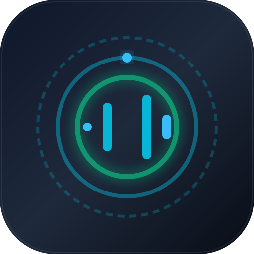

CHIRPDROP
Acoustic Receiver
Air-Gapped Acoustic Channel
⚠️ HTTPS Context Required
Microphone access requires a secure origin (HTTPS). Android Chrome and iPhone Safari block microphone capture over unencrypted HTTP. Please open this receiver via HTTPS or host it on GitHub Pages.
🚫 Microphone Permission Required
Microphone access was denied. Please allow microphone permissions in your browser's site settings and reload.
Status: Not listening
Acoustic Input Level
-∞ dB
📊 Live Audio Diagnostics
Idle
Microphone
Inactive
AudioContext
Closed
Input Rate
-- Hz
Decoder Rate
48,000 Hz
Signal Level
-∞ dB
Blocks In
0
Decode Cycles
0
Messages OK
0
DSP / Filters:
AEC: Off | NS: Off | AGC: Off